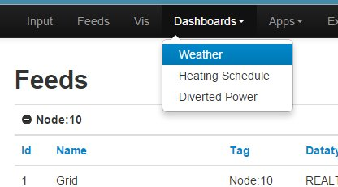

Hello!
I installed on Raspberry2 the 8.5 version.
When I want to upload data to a feed, I get:
Fatal error: Call to a member function setTimezone() on a non-object in /var/www/emoncms/Modules/input/process_model.php on line 668
Timezone and database are updated and correct.
Anybody an idea?
Thank you!
Re: Timezone Problem (Extended branch)
Check the date.timezone variable in /etc/php5/apache2/php.ini
It should be uncommented and set to your timezone.
See http://php.net/manual/en/timezones.php for a list of supported timezones.
Re: Timezone Problem (Extended branch)
Hi Bill,
Yes, this variable I have set before correct:
[Date]
; Defines the default timezone used by the date functions
; http://php.net/date.timezone
date.timezone = "Europe/Vienna"
The error happen in:
// Get the start of the day
private function getstartday($time_now)
{
$now = DateTime::createFromFormat("U", $time_now);
$now->setTimezone(new DateTimeZone($this->timezone));
$now->setTime(0,0); // Today at 00:00
return $now->format("U");
}
I also checked the database and user ... same TimeZone!
maybe $now or &this is null?
Re: Timezone Problem (Extended branch)
Can you confirm that you've selected your timezone within emoncms (it's in the Account menu).
Paul
Re: Timezone Problem (Extended branch)
Hi Paul!
Yes, I can confirm. I also checked it in the database ... Linux, Apache and emoncms has "Europe/Vienna".
I set Linux locale to "de/at" and not "de/de" ... could this be a problem?
Re: Timezone Problem (Extended branch)
Here all infos:
uname -a:
Linux raspberrypi 3.18.11+ #781 PREEMPT Tue Apr 21 18:02:18 BST 2015 armv6l GNU/Linux
locale:
LANG=de_DE.UTF-8
LANGUAGE=de_DE.UTF-8
LC_CTYPE="de_DE.UTF-8"
LC_NUMERIC="de_DE.UTF-8"
LC_TIME="de_DE.UTF-8"
LC_COLLATE="de_DE.UTF-8"
LC_MONETARY="de_DE.UTF-8"
LC_MESSAGES="de_DE.UTF-8"
LC_PAPER="de_DE.UTF-8"
LC_NAME="de_DE.UTF-8"
LC_ADDRESS="de_DE.UTF-8"
LC_TELEPHONE="de_DE.UTF-8"
LC_MEASUREMENT="de_DE.UTF-8"
LC_IDENTIFICATION="de_DE.UTF-8"
LC_ALL=de_DE.UTF-8
php.ini:
[Date]
; Defines the default timezone used by the date functions
; http://php.net/date.timezone
date.timezone = "Europe/Vienna"
In the database from "users" and on the website I see that the user is used same timezone.
Re: Timezone Problem (Extended branch)
Its fixed on next commit.
But try making this change in bold:
$now = DateTime::createFromFormat("U", (int)$time_now);
Re: Timezone Problem (Extended branch)
I'm having this problem too and would appreciate any advice.
I've just done a fresh install of emonhub to migrate after using oemgateway for a long time. I also want to send my data to an additional new remote server.
Emonhub is sending data, but this error appeared as I started to configure the feeds, so it's something in that process:
2015-06-09 12:30:25,246 WARNING emonCMS send failure: wanted 'ok' but got '
Fatal error: Call to a member function setTimezone() on a non-object in /****PATH_HERE****/Modules/input/process_model.php on line 669
I have tried the temp fix you suggest above @chaveiro in process_model.php:
$now = DateTime::createFromFormat("U", (int)$time_now);
...but no change.
I've set the right timezone on my remote emoncms installation: Europe/London and set the same timezone on emonhub.
It seems like the time being passed from other functions is Not a Number.....but I'm guessing at that.
The result is no inputs update on the remote site after the first update and the feeds show Updated as NaNs ago for all of the feeds I've set up so far.
Any ideas welcome.
Michael
Re: Timezone Problem (Extended branch)
I suggest you to try XT version, thats the only version i maintain.
Re: Timezone Problem (Extended branch)
I've been trying to fix this but no joy, so going to leave it for a while. I'm still seeing "NaNs ago" as the updated count on feeds page:
http://www.innovys.co.uk/emoncms/feed/list
I'm on a hosted environment, so got some questions into the hosting provider re. redis and some other stuff. But I'm at the point where I forget what I've looked at and what I haven't! So time to forget it for a while....Will check back again later
Re: Timezone Problem (Extended branch)
(you're not on xt version)
Re: Timezone Problem (Extended branch)
I'm not a PHP expert
Is that the xt version of PHP?
How do you know? Could you check from my link?
Thanks:D
Re: Timezone Problem (Extended branch)
No, it's the extended git branch of emoncms, which chaviero kindly maintains.
Paul
Re: Timezone Problem (Extended branch)
Thanks Paul and Chaveiro:D
I'll download and do a fresh install in the next few days
Re: Timezone Problem (Extended branch)
I've done a fresh install with XT, configured it and all seems to be working fine. My updates are showing time properly again :
I'll leave it running and see how it develops now.
Thanks @chaveiro , Paul and others :D
Re: Timezone Problem (Extended branch)
Good to hear. The extended version does seem to be the most bug free version at this time.
Paul
Re: Timezone Problem (Extended branch)
v8.5.1 XT seems to have had a successful first night without any problems.
However I'm just looking to set up the rest of my interface and I can't see the dashboard menu....Had a quick search for known bugs and can't see it.
Any suggestions?
Michael
Re: Timezone Problem (Extended branch)
This is what I see...
...but I already had some dashboards created when I installed the extended branch. I wonder if we need a 'New Dashboard' submenu item, to create a dashboard, especially when no dashboards currently exist?
Paul

Re: Timezone Problem (Extended branch)
I created a fresh install, included fresh mysql DB as I wanted to try and fix my errors and was willing to rebuild my views later.
I'm also planning to try and merge my historical data from a private server running 8.1.1 http://kingnetwork.axiscam.net/emoncms/dashboard/view
...but that's a question for later!
Here's what I see on feeds:
and same for inputs:
Re: Timezone Problem (Extended branch)
Your screenprints are too small to see the detail, can you add them as 'File attachments' (underneath the editor), copy the url, then add an 'Image' with the same url from the comment editor.
This is how we add images to posts in the forum.
Paul
Re: Timezone Problem (Extended branch)
ahhh.
Images attached now.....!
Thx:P
Re: Timezone Problem (Extended branch)
That is strange, i could not reproduce even after deleting my dashboards.
Any error on chrome console (press F12) ?
Go to http://yourhost//dashboard/list directly and create a new dashboard.
Re: Timezone Problem (Extended branch)
No console error messages before I did anything Paul. I tabbed around input, feeds and other views and nothing I could see
Manually getting into the view with ..../dashboard/list worked. I saw the sheet saying no dashboard and could create a new one.
However, I've created one now but still don't see the menu....See attached for dashboard view, with console and no dashboard menu....
Mike
Re: Timezone Problem (Extended branch)
Just cleared all the browsing cache too and no joy. Hitting ctrl R to refresh the Java too. Same: no dashboard menu
Re: Timezone Problem (Extended branch)
I've tracked down the bug, but would appreciate advice on the solution. It's in dashboard_menu.php. It's a short file and so I've pasted it below, with my debug comments.
The $sess variable is being set to "" in the $menu_left array. If I set the $sess variable to "all" then my Dashboard menu appears, including the 2 dropdowns.
The $sess variable is set above, but I'm not confident enough in my php skills to be sure of how to change this correctly.
If anyone can guide me I'd appreciate it. I could just manually set it to "all" I guess, but that doesn't seem right :P
Michael
<?php
global $mysqli,$route;
require_once "Modules/dashboard/dashboard_model.php";
$dashboard = new Dashboard($mysqli);
$location = 'view';
$sess = (isset($session['write']) && $session['write'] ? 'write':(isset($session['read']) && $session['read'] ? 'read':''));
if (isset($session['profile']) && $session['profile']==1) {
$dashpath = $session['username'];
$sess= 'all';
} else {
if ($route->action == "edit" && $session['write']) $location = 'edit';
$dashpath = 'dashboard/'.$location;
}
// Contains a list for the drop down with dashboards available for user session type
$listmenu = $dashboard->build_menu_array($location);
$domain = "messages";
bindtextdomain($domain, "Modules/dashboard/locale");
bind_textdomain_codeset($domain, 'UTF-8');
//MJK $sess= 'all';
$menu_left[] = array('name'=> dgettext($domain, "Dashboards"), 'path'=>$dashpath , 'session'=>$sess, 'order' => 4, 'dropdown'=>$listmenu);
//var_dump("mjk:");
//var_dump($menu_left);
//die();
Re: Timezone Problem (Extended branch)
Try by changing :
global $mysqli,$route;
to:
global $mysqli,$route,$session;
Re: Timezone Problem (Extended branch)
Chaviero, if no dashboards have been created, ie a clean install, then how do users create their first dashboard with the new menu drop down, other than entering the URL path in their browser?
Would a new sub menu item 'new dashboard' make it easier.
Paul
Re: Timezone Problem (Extended branch)
In that case there is no dropdown and the menu item is a link to the list.
Re: Timezone Problem (Extended branch)
@chaveiro I've made that change and it's solved it. Thanks very much :D
I have a dashboard menu item!
Thx again
Re: Timezone Problem (Extended branch)
Cool!
That has something to do with php versions. I fixed on github.